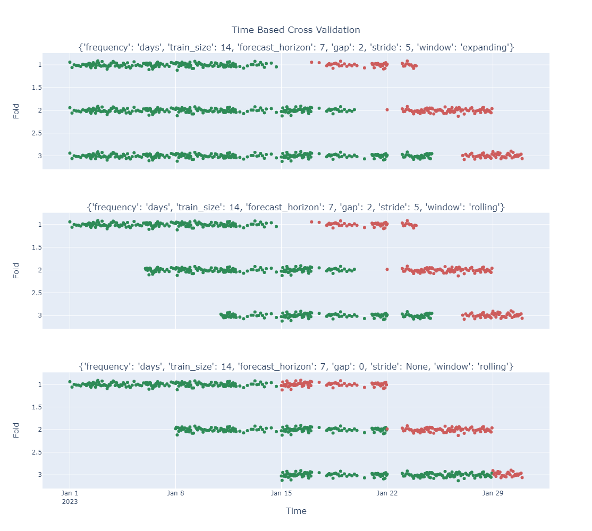

Getting Started¶
The following sections will guide you through the basic usage of the library.
TimeBasedSplit¶
The TimeBasedSplit class allows to define a time based split with a given frequency, train size, test size, gap, stride and window type.
from timebasedcv import TimeBasedSplit
tbs = TimeBasedSplit(
frequency="days",
train_size=30,
forecast_horizon=7,
gap=0,
stride=3,
window="rolling",
)
The available values for the parameters are:
frequency: "days", "seconds", "microseconds", "milliseconds", "minutes", "hours", "weeks".train_size: any strictly positive integer.forecast_horizon: any strictly positive integer.gap: any non-negative integer.stride: any strictly positive integer orNone.window: "rolling" or "expanding".
Once the instance is created, it is possible to split the data using the split method. This method requires to pass a time_series as input to create the boolean masks for train and test.
Optionally it is possible to pass a start_dt and end_dt arguments as well. If provided, they are used in place of the time_series.min() and time_series.max() respectively to determing the period.
This is useful because the series does not necessarely starts from the first date and/or terminates in the last date of the time period of interest.
import pandas as pd
import numpy as np
time_series = pd.Series(pd.date_range("2023-01-01", "2023-12-31", freq="D"))
size = len(time_series)
df = (pd.DataFrame(data=np.random.randn(size, 2), columns=["a", "b"])
.assign(y=lambda t : t[["a", "b"]].sum(axis=1))
)
X, y = df[["a", "b"]], df["y"]
print(f"Number of splits: {tbs.n_splits_of(time_series=time_series)}")
# Number of splits: 112
for X_train, X_forecast, y_train, y_forecast in tbs.split(X, y, time_series=time_series):
print(f"Train: {X_train.shape}, Forecast: {X_forecast.shape}")
# Train: (30, 2), Forecast: (7, 2)
# Train: (30, 2), Forecast: (7, 2)
# ...
# Train: (30, 2), Forecast: (7, 2)
Another optional parameter that can be passed to the split method is return_splitstate. If True, the method will return a SplitState dataclass which contains the "split" points for training and test, namely train_start, train_end, forecast_start and forecast_end. These can be useful if a particular logic needs to be applied to the data before training and/or forecasting.
TimeBasedCVSplitter¶
The TimeBasedCVSplitter class conforms with scikit-learn CV Splitters. In order to achive such behaviour we combine the arguments of TimeBasedSplit __init__ and split methods, so that it is possible to restrict the arguments of
split and get_n_splits to the arrays to split (i.e. X, y and groups), which are the only arguments required by scikit-learn CV Splitters.
That is because a CV Splitter needs to know a priori the number of splits and the split method shouldn't take any extra arguments as input other than the arrays to split.
import pandas as pd
import numpy as np
from sklearn.linear_model import Ridge
from sklearn.model_selection import RandomizedSearchCV
from timebasedcv import TimeBasedCVSplitter
start_dt = pd.Timestamp(2023, 1, 1)
end_dt = pd.Timestamp(2023, 12, 31)
cv = TimeBasedCVSplitter(
frequency="days",
train_size=30,
forecast_horizon=7,
time_series=time_series,
gap=0,
stride=3,
window="rolling",
start_dt=start_dt,
end_dt=end_dt,
)
param_grid = {
"alpha": np.linspace(0.1, 2, 10),
"fit_intercept": [True, False],
"positive": [True, False],
}
random_search_cv = RandomizedSearchCV(
estimator=Ridge(),
param_distributions=param_grid,
cv=cv,
n_jobs=-1,
).fit(X, y)
random_search_cv.best_params_
# {'positive': True, 'fit_intercept': False, 'alpha': 0.1}
Examples of Cross Validation¶
The following examples show how the CV works with different parameters.
First and foremost let's generate some random data. The following code generates a time series with randomly spaced points between 2023-01-01 and 2023-01-31.
import pandas as pd
import numpy as np
np.random.seed(42)
dates = pd.Series(pd.date_range("2023-01-01", "2023-01-31", freq="D"))
size = len(dates)
df = pd.concat([
pd.DataFrame({
"time": pd.date_range(start, end, periods=_size, inclusive="left"),
"value": np.random.randn(_size-1)/25,
})
for start, end, _size in zip(dates[:size], dates[1:], np.random.randint(2, 24, size-1))
]).reset_index(drop=True)
time_series, X = df["time"], df["value"]
df.set_index("time").resample("D").count().head(5)
# time value
# 2023-01-01 14
# 2023-01-02 2
# 2023-01-03 22
# 2023-01-04 11
# 2023-01-05 1
Now let's plot train and forecasting splits with different split strategies (or configurations).
The gren dots represent the train points, while the red dots represent the forecastng points.

Here is the code to replicate the results:
configs = [
{
"frequency": "days",
"train_size": 14,
"forecast_horizon": 7,
"gap": 2,
"stride": 5,
"window": "expanding"
},
{
"frequency": "days",
"train_size": 14,
"forecast_horizon": 7,
"gap": 2,
"stride": 5,
"window": "rolling"
},
{
"frequency": "days",
"train_size": 14,
"forecast_horizon": 7,
"gap": 0,
"stride": None,
"window": "rolling"
}
]
import plotly.graph_objects as go
from plotly.subplots import make_subplots
from timebasedcv import TimeBasedSplit
fig = make_subplots(
rows=len(configs),
cols=1,
subplot_titles=[str(config) for config in configs],
shared_xaxes=True,
vertical_spacing=0.1,
x_title="Time",
)
for _row, config in enumerate(configs, start=1):
tbs = TimeBasedSplit(
**config,
)
fmt = "%Y-%m-%d"
for _fold, (train_forecast, split_state) in enumerate(tbs.split(X, time_series=time_series, return_splitstate=True), start=1):
train, forecast = train_forecast
ts = split_state.train_start.strftime(fmt)
te = split_state.train_end.strftime(fmt)
fs = split_state.forecast_start.strftime(fmt)
fe = split_state.forecast_end.strftime(fmt)
print(ts, te, fs, fe)
fig.add_trace(
go.Scatter(
x=time_series[time_series.between(ts, te, inclusive="left")],
y=train + _fold,
name=f"Train Fold {_fold}",
mode="markers",
marker={
"color": "seagreen",
}
),
row=_row,
col=1,
)
fig.add_trace(
go.Scatter(
x=time_series[time_series.between(fs, fe, inclusive="left")],
y=forecast + _fold,
name=f"Forecast Fold {_fold}",
mode="markers",
marker={
"color": "indianred",
}
),
row=_row,
col=1,
)
fig.update_layout(
title={
"text": "Time Based Cross Validation",
"y":0.95, "x":0.5,
"xanchor": "center",
"yanchor": "top"
},
showlegend=False,
height=1000,
**{
f"yaxis{i}": {"autorange": "reversed", "title": "Fold"}
for i in range(1, len(configs)+1)
}
)
fig.show()